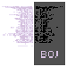
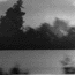
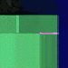
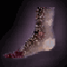
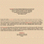
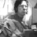
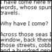
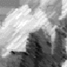

| ARCHIVES 1999-2000 | |
|  | Ted Warnell Book of Job 1 November 2000 |
| M.D. Coverley The Universal Resource Locator 1 October 2000 Maps of the Russian Earth |
|
Talan Memmott Hypermediation / Ideoscope |
|
Jennifer Ley Never Far from the Original Emergence... |
|
|  | Brad Brace Classic Hypermodern Imagery... posted/mailed every 12 hours... |
|  | Thomas Swiss Downtown doesn't feel right any more: it stinks. |
Jim Andrews These writers practice Indeed, the reason Why, he asks |
|
|  | c. allan dinsmore Foot/Feet/Footware/Walk(ing)/etc. |
Diane Greco Yes! We have no bananas! We have no bananas today! |
|
|  | Joel Weishaus Was "the Hollywood Swami" I saw one night ... the same one who was Mircea Eliade's guru in India forty years before? |
|  | Alan Sondheim The beautiful Russian ballet dancer Nikuko pirouettes in private for Doctor Leopold Konninger. |
Kevin Fanning dear mr thomas / did you notice all / the / rocks in the drive way were allgonell... |
|
|  | Jeffery M. Bockman |
M.D. Coverley "Is Something Going Wrong with this Machine?" |
|
Robert Kendall Sight...a windowing environment. |
|
|  | Edward Falco The musty-smelling always-dark closet was my favorite hiding place. |
Deena Larsen It's the Taste of Colorado. |
|
Issues 1999-2001 edited by Brian Lennon |
|